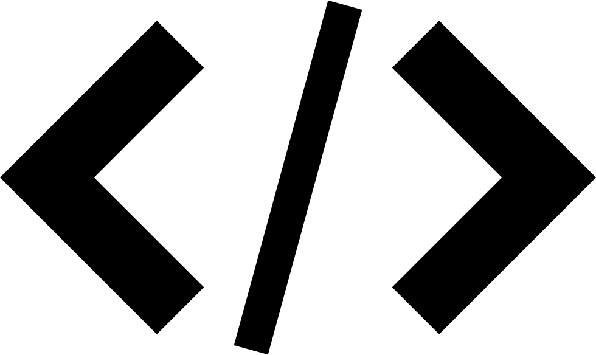

Нижче наведені уроки з таких напрямків як: мова програмування С, MySQL та методичка з використання FASM/HLASM.
Сайт буде доповнюватися по мірі надходження інформації. "Embedded" існує лише українською мовою. Дякую за розуміння та очікування.
| Мова програмування С | Дані уроки - переклад книги "Мова програмування Сі" Брайана Кернігана та Денніса Рітчі |
| MySQL | Короткі й не дуже уроки по мові баз даних |
| FASM/HLASM | Чому ці мови? По-перше, FASM - одна з найсучасніших з низьких мов програмування, по-друге, HLASM - поточна мова асемблера IBM. |